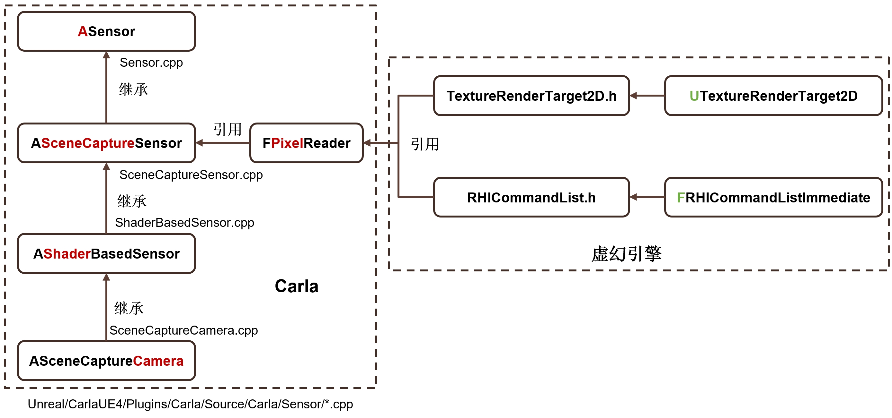
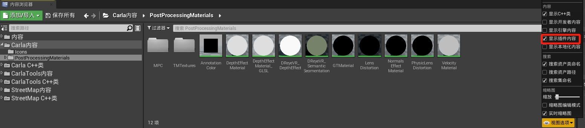
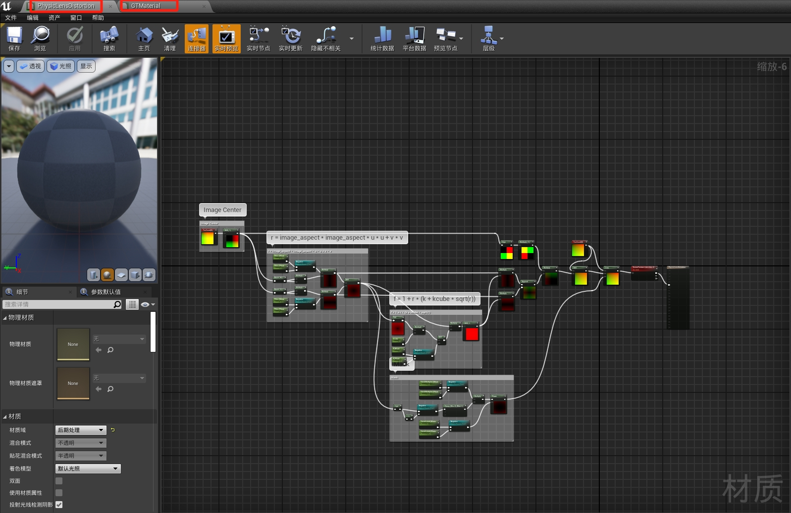
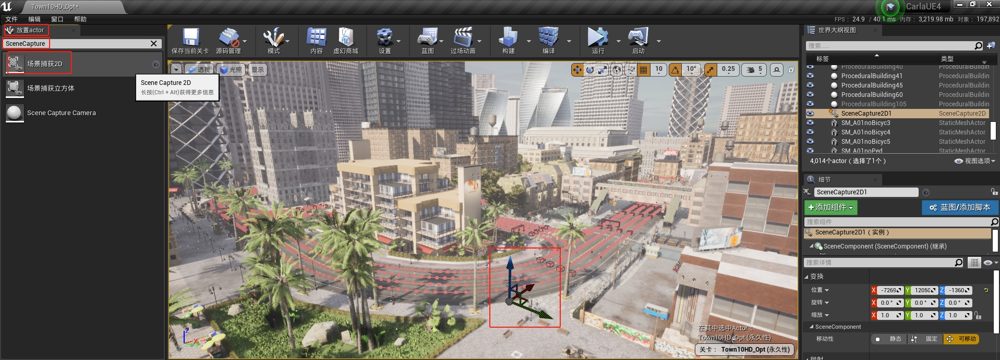
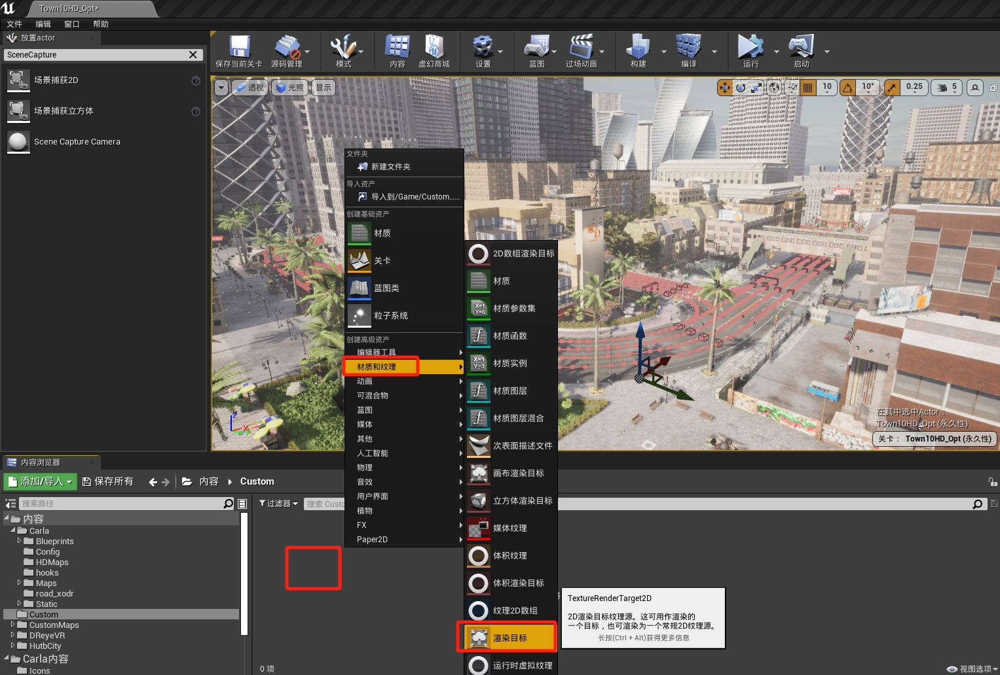
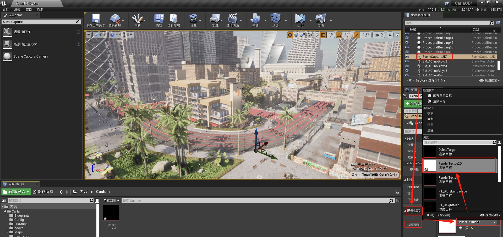
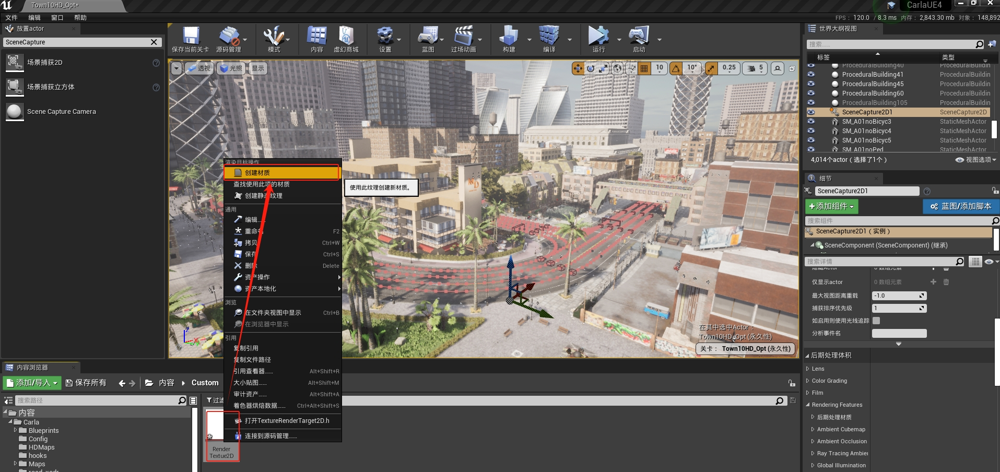
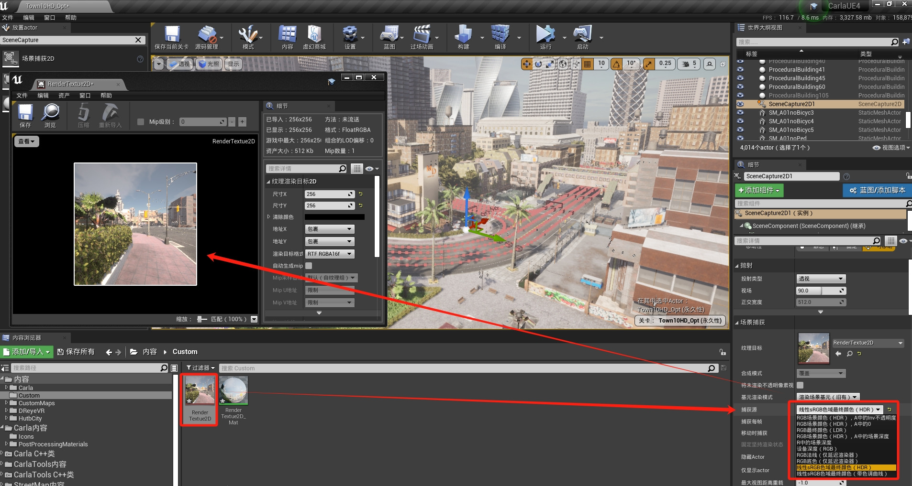
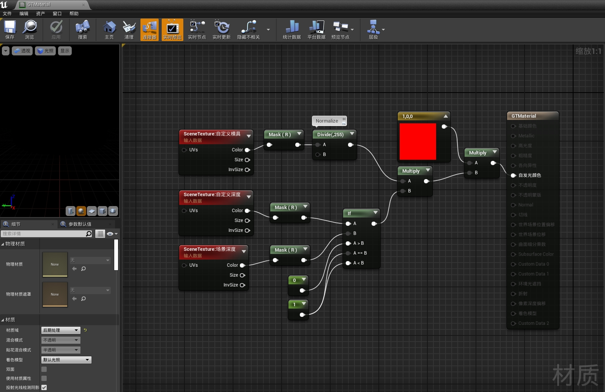
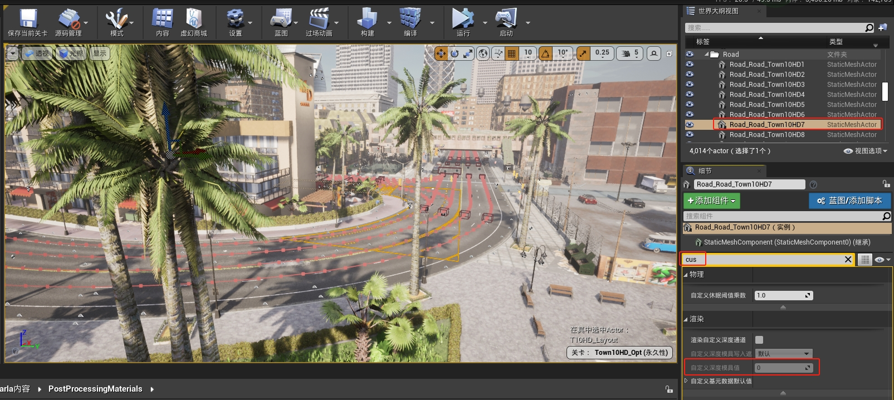

Camera analysis
自带语义分割传感器实现路径¶
本文从 Carla 出发，深入UE内部，来理解 Carla 中的视觉传感器及真值系统的实现原理。
1、知识铺垫¶
Carla RGB 摄像头传感器代码分析讲了 Camera 之间的继承关系。下图表达它们的层次关系：

- ASensor 完成 Carla 的抽象传感器功能；
- ASceneCaptureSensor 实现UE渲染接口，
UTextureRenderTarget2D和USceneCaptureComponent2D的加入，并且USceneCaptureComponent2D控制着后处理（FPostProcessingSetting）参数； - AShaderBasedSensor 主要负责加入后处理材质(PostProcessing Material)，后处理材质也是一种着色器(shader)，对着色有影响，AShaderBasedSensor是抽象类，不是具体的传感器函数，所以只提供功能，供继承子类扩展着色器；
- ASceneCaptureCamera，
ASemanticSegmentationCamera，AOpticalFlowCamera，ASemanticSegmentationCamera等其他 camera 均继承自AShaderBasedSensor，它们的逻辑大多都很简单，就是使用 AShaderBasedSensor 提供的 AddPostProcessingMaterial 接口，添加后处理材质，根据不同的传感器类型，有不同的着色需求。
2、UE层面理解相机¶
- 后处理材质放置位置
从代码中去看，拿 语义分割相机 举例，该传感器用了两个后处理材质：物理畸变模型、GroundTruth标注。
ASemanticSegmentationCamera::ASemanticSegmentationCamera(
const FObjectInitializer &ObjectInitializer)
: Super(ObjectInitializer)
{
// AddPostProcessingMaterial()在给定的路径上加载 UMaterialInstanceDynamic，并将其附加到具有权重的着色器列表中。
AddPostProcessingMaterial(
TEXT("Material'/Carla/PostProcessingMaterials/PhysicLensDistortion.PhysicLensDistortion'"));
AddPostProcessingMaterial(
TEXT("Material'/Carla/PostProcessingMaterials/GTMaterial.GTMaterial'"));
}
从虚幻编辑器里面去找，该文件属于 Carla 插件带的材质，不属于场景内容文件，所以要在视图选项中选上显示插件内容，才能在左边的内容浏览器目录中看到CARLA内容。在PostProcessingMaterials路径下就可以看到PhysicLensDistortion和GTMaterial的材质文件。

点开后可以看到该材质文件的蓝图逻辑：

- 在虚幻编辑器里可视化相机
参考 UE4场景采集之场景采集2D ，很推荐熟练掌握在虚幻编辑器中使用各种Component的方式，因为这样会比重新写代码，编译代码，验证问题整个流程快很多，很多时候我们调整的Component参数可以直接在Editor里面尝试，可视化效果，在传感器开发尤其重要。
下面用视频简单介绍一下 UTextureRenderTarget2D 和 USceneCaptureComponent2D 到底是什么：
视频里主要做了几个操作：
1.在放置Actor中搜索 场景捕获2D(SceneCapture2D) 拖入场景，会产生一个类似摄像机的物体；

2.在内容浏览器空白处右键，创建一个 材质和纹理 -> 渲染目标(TextureRenderTarget2D)，创建后重命名为RenderTexture2D。

3.将画布渲染目标 TextureRenderTarget2D 指派给场景捕获2D SceneCapture2D

4.给画布渲染目标 TextureRenderTarget2D 创建材质：右键画布渲染目标，选择

5.双击打开内容浏览器中的场景捕获2D(RenderTexture2D)，选择不同的渲染输出内容（可以选法线、底色、LDR、HDR 等）可以看到不同的场景捕获效果。

6.在 后期处理体积 里面，添加后处理材质，并选择从现有资产中添加
7.加入不同的后处理材质，查看效果
经过这些操作，大概就了解了它们分别是什么角色：USceneCaptureComponent2D 负责设置渲染的视角（FViewInfo）、传感器外参、后处理参数设置（FPostProcessSettings）、捕获源（Capture Source）等渲染需要的参数。
UTextureRenderTarget2D 负责记录渲染结果，捕获源里面是该场景捕捉器的渲染结果 Texture，然后通过一些取出 Buffer 的方式，将该渲染结果取出，然后通过 Carla 的一些传输数据方式，传给客户端，然后再解码二进制。
3、语义分割的实现原理¶
- 语义分割的后处理材质蓝图
双击打开材质Carla内容/PostProcessingMaterials/GTMaterial

首先该材质里引入了两个概念：场景深度、自定义深度。场景深度就是用于渲染的 Z-Depth，光栅渲染判断前后关系用的，在GBuffer中也存在；自定义深度，自定义深度模具值（Custom Depth Stentil Value），Carla 拿来做语义分割的标记，以 Actor 为单位，可以用来区分不同物体，最后根据这个与 Carla 内部逻辑，对图像进行上色（参考 创建语义标签 ）。
比如，如路面是7，路线是6。
